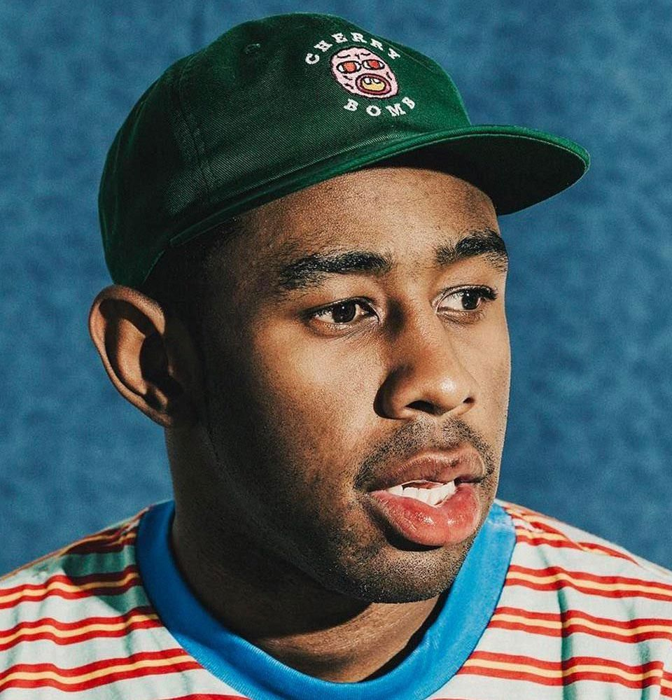

Tyler, the Creator
Nome de nascimento: Tyler Okonma
Local de nascimento: Los Angeles, Califórnia
6 de março de 1991
Anos em atividade: 2007 - Dias atuais/

w Tyler, the Creator nasceu como Tyler Gregory Okonma em Los Angeles, Califórnia, em 6 de março de 1991. Ele cresceu em uma casa predominantemente feminina, criado pela mãe e pela avó. Como não conheceu o pai (um tema que ele aborda em várias músicas, como "Bastard" e "Answer"), ele passou muito tempo sozinho ou imerso em seus próprios mundos.
Tyler não era o aluno mais estável do mundo. Ele chegou a frequentar 12 escolas diferentes em apenas sete anos, entre as regiões de Los Angeles e Sacramento. Isso fez dele um "eterno novato", o que o forçou a desenvolver uma personalidade forte para se adaptar, mas também o tornou um tanto isolado socialmente.
Sua carreira musical começou na internet e decolou a partir daí. Seu nome artístico surgiu de seu perfil no MySpace, plataforma que ele usava para interagir com outros artistas e postar suas primeiras músicas no início dos anos 2000. Em 2007, a incursão de Okonma na música pela internet o levou à formação do coletivo musical Odd Future, também conhecido como Odd Future Wolf Gang Kill Them All e OFWGKTA. Além de Okonma, o coletivo contou com membros como Hodgy Beats, Jasper Dolphin, Mike G, Left Brain, Domo Genesis, Matt Martians, Pyramid Vritra, Casey Veggies, Earl Sweatshirt, Syd tha Kid, Taco e Frank Ocean ao longo dos anos, entre outros. A primeira mixtape do Odd Future foi lançada em 2008. Em 2011, o grupo fundou sua própria gravadora, a Odd Future Records. Além da música, o Odd Future se aventurou na moda com sua própria linha de roupas e estrelou seu próprio programa de esquetes de comédia no Adult Swim, chamado Loiter Squad, que durou três temporadas. O Odd Future causou polêmica devido às suas letras, que alguns descreveram como violentas, misóginas e até mesmo homofóbicas. Seus shows atraíam multidões que se entregavam ao mosh, e os membros do Odd Future chegavam a pular na plateia. As atitudes controversas do Odd Future levaram ao banimento do grupo na Nova Zelândia em 2014. Apesar da notoriedade, membros do Odd Future produziram trabalhos solo de sucesso, como o álbum de estreia de Frank Ocean, Channel Orange, e Syd e Matt Martians, que formaram o grupo de neo-soul The Internet. Tyler, the Creator manteve uma carreira solo enquanto estava no Odd Future, que não lança nada em conjunto desde 2016, levando os fãs a aceitarem a inatividade como o fim do grupo.
Tyler, the Creator lançou diversos projetos solo aclamados pela crítica enquanto ainda fazia parte do Odd Future. Seu primeiro trabalho foi a mixtape Bastard, em 2009, que recebeu elogios de publicações como a Pitchfork e lhe rendeu um contrato com uma gravadora. Em seguida, lançou a faixa "Yonkers" em 2010, antes de lançar seu primeiro álbum de estúdio, Goblin, em 2011. Goblin contou com participações de membros do Odd Future, com Okonma produzindo a maior parte do álbum. Assim como os trabalhos do Odd Future, Bastard e Goblin também geraram controvérsia. Em 2015, o Reino Unido decidiu proibir Tyler, the Creator de se apresentar ao vivo por vários anos, citando as letras de Bastard e Goblin como justificativa. Okonma também foi alvo de críticas após o lançamento de Goblin por outros artistas da indústria, que o acusaram de misoginia e homofobia. Apesar disso, a crítica continuou elogiando o trabalho e Goblin figurou em diversas listas de melhores álbuns do ano.
criou a marca de moda Golf Wang, inspirada na cultura do skate, no hip hop e na cultura sneaker, produzindo skates, tênis e roupas. Em 2012, fundou o festival anual de música Camp Flog Gnaw. Em 2013, lançou seu terceiro álbum, Wolf , que contou novamente com a participação de seus colaboradores do Odd Future e alguns de seus ídolos musicais, como Erykah Badu e Pharrell Williams. O sucessor de Wolf , Cherry Bomb , de 2015 , também contou com a participação de Williams e outros grandes artistas como Lil Wayne, Kanye West, Charlie Wilson e Schoolboy Q.
Após uma turnê mundial para o álbum Cherry Bomb, Okonma esperou dois anos para lançar Flower Boy em 2017. O álbum representou uma mudança em seu trabalho, conhecido por ser ousado e, às vezes, incluir humor negro, para uma obra mais pessoal e que incorporava elementos de jazz. Flower Boy foi recebido com elogios e aclamação generalizados. Alcançou o 2º lugar na Billboard 200 e rendeu a Okonma uma indicação ao Grammy de Melhor Álbum de Rap. Embalado pelo sucesso de Flower Boy , Okonma lançou um projeto centrado no filme de animação de 2018, Dr. Seuss' The Grinch, após ser convidado a fazer um cover da música "You're a Mean One Mr. Grinch" para o filme e sua trilha sonora oficial.
Meses depois, após uma prévia divulgada nas redes sociais mostrando Okonma com uma peruca loira de corte tigela e um terno multicolorido, assumindo uma nova persona chamada "Igor", o artista lançou seu quinto álbum, apropriadamente intitulado IGOR, em meados de 2019. A narrativa de IGOR acompanha os altos e baixos da transformação de Okonma em "Igor" devido a um amor não correspondido, onde sua amada luta para expressar seus sentimentos abertamente enquanto mantém um relacionamento com outra mulher. O álbum conta com a participação de antigos colaboradores e inspirações de Okonma, como Kanye West, Charlie Wilson, Pharrell Williams, Santigold e Solange . Playboi Carti, Lil Uzi Vert, La Roux, Ceelo Green e o comediante Jerrod Carmichael também marcam presença no álbum. Descrito pelo próprio Okonma como "inovador em termos de gênero" e único em comparação com seus álbuns anteriores, o trabalho de IGOR incorporou uma gama diversificada de samples de artistas como Bibi Mascel, da Nigéria (artista de funk dos anos 80), Tatsuro Yamashita, pioneiro do city pop japonês, Al Green, o lendário cantor de soul, Cullen Omori, da década de 2010, e muitos outros. IGOR foi aclamado pela crítica especializada e pelos fãs. Também se tornou o primeiro álbum de Okonma a estrear em 1º lugar na Billboard 200. Em 2020, IGOR rendeu a Tyler, the Creator seu primeiro Grammy de Melhor Álbum de Rap, pelo qual ele se mostrou "muito grato", mas aproveitou a oportunidade para expressar que também era um "elogio ambíguo", devido à exclusão de artistas negros das principais categorias do Grammy, relegando-os às categorias de "rap" e "urbano".
Tyler, the Creator já citou diversas vezes o trabalho de Pharrell Williams e Chad Hugo no grupo NERD e na dupla The Neptunes como suas maiores influências. O primeiro álbum do NERD, In Search Of… , e o trabalho do The Neptunes com a dupla de hip hop Clipse (Pusha T e No Malice) foram creditados por Okonma especificamente por tê-lo introduzido à música, moldando-o no artista que é hoje, e até mesmo sampleados em algumas de suas próprias faixas. Além disso, ele elogiou a lendária Erykah Badu como outra artista que influenciou seu trabalho. Artistas próximos a Okonma, como Solange e Frank Ocean, também o inspiraram. Com mais de uma década na música e na moda, Tyler, the Creator influenciou artistas mais jovens como Billie Eilish e a boy band irreverente BROCKHAMPTON, especialmente seu membro fundador, Kevin Abstract.
| Discografia (Clique para ver) |
|---|
| Goblin (2011) |
| Wolf (2013) |
| Flower Boy (2017) |
| IGOR (2019) |
| Call Me If You Get Lost (2021) |
| Chromakopia (2024) |
Até os dias atuais Tyler, The Creator acumulou 3 grammys. Sendo eles:
Em 2020 ganhou o melhor Albúm de Rap com o sucesso "IGOR"
Já em 2022 ganhou o melhor almbúm de Rap com "CALL ME IF YOU GET LOST"
E o mais recente, em 2026 Tyler ganhou o grammy na categoria Melhor capa de almbúm com "CHROMAKOPIA"
Mesmo que a música "See You Again" seja a sua mais famosa dentre todas já lançadas, ela não ganhou nenhum premio da indústria.